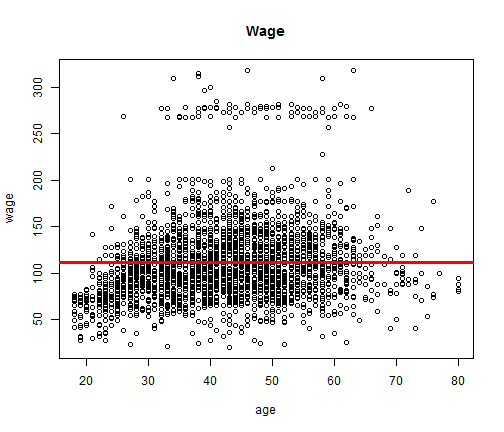
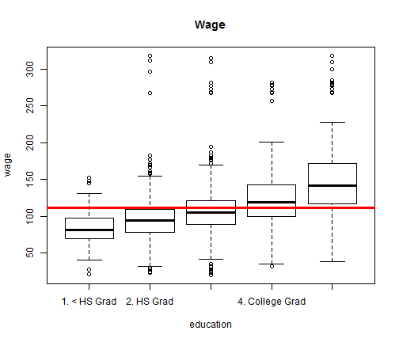
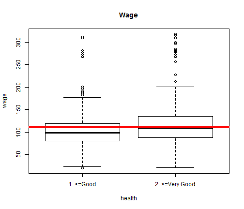

Chiccueri
Developing Data Products
library(caret)
library(ggplot2)
library(ISLR)
data(Wage)
choices <- c("year", "age", "sex", "maritl", "race", "education", "job class",
"health")
mw <- mean(Wage$wage)
md <- median(Wage$wage)
par(cex.axis = 0.7)
plot(Wage[, choices[2]], Wage$wage, xlab = choices[2], ylab = "wage", main = "Wage")
lines(c(0, 100), c(mw, mw), col = "red", lwd = 3)

width = 50
plot(Wage[, choices[6]], Wage$wage, xlab = choices[6], ylab = "wage", main = "Wage")
lines(c(0, 100), c(mw, mw), col = "red", lwd = 3)

plot(Wage[, choices[8]], Wage$wage, xlab = choices[8], ylab = "wage", main = "Wage")
lines(c(0, 100), c(mw, mw), col = "red", lwd = 3)
